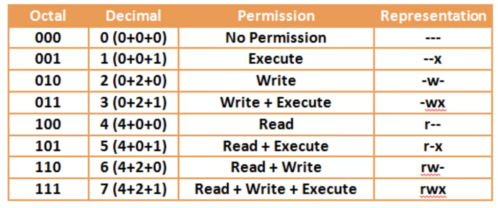

![]()
After working at Bioinformatics Institute for 3 years, I gradullly relizaed that it’s essential to learn Linux as:
- All the job-related files/data are stored in the the remote server
- It’s required to use remote sever to process thousands of images I generated from wet-lab (segmentation, feature extraction)
- Free access to hundreds of scientific software tools (often more up-to-date)
- Multiuser, multitasking & remote access
- Better performance, advanced parallel computing on LINUX clusters
So I start to learn Linux for computional biology from：
- https://hpcc.ucr.edu/manuals/linux_basics/
- https://linuxconfig.org/linux-commands
- Linux for biologists
The following content are credited from the GEN242
Unix Shortcuts
- Ctrl + A # cursor to beginning of command line
- Ctrl + E # cursor to end of command line
- Ctrl + L # clear the screen
- Ctrl + U # clear the line before the cursor position
- Ctrl + K # clear the line after the cursor
- Ctrl + C # kill the command that is currently running
- Ctrl + D # exit the current shell
- Ctrl + W # cut last word
- Ctrl + Y # Paste (“yank”) content that was cut earlier (by Ctrl-w or Ctrl-k)
- Alt + F # move the cursor forward one word
- Alt + B # move the cursor backward one word
Copy and paste
| Linux (xterm) | Windows | Mac (Terminal) |
|---|---|---|
| # Copy CTRL+SHIFT+C # Paste CTRL+SHIFT+V |
# Copy by highlighting with mouse # Paste SHIFT+INSERT |
# Copy COMMAND+c # Paste COMMAND+v |
Viewing Text files
less # Progressively print a file to the screen.
cat # Concatenate and print files.
wc # Line, word, and byte (character) count of a file.
sort # Sort the lines of a file and print the result to the screen.
uniq # Show only the unique lines of a file.
file # Determine the type of a file.
head # Print the head (i.e., first few lines) of a file.
tail # Print the tail (i.e., last few lines) of a file.
diff # Show the differences between two files.
cut # Selecting columns
tr # Substituting characters
grep # finds all the lines of a file that match a given pattern.Informative
file <file-name> # Show type of file (text, binary, compressed, etc...)
id # Shows your user name and associated groups
hostname # Shows the name of the machine your shell is currently on
### Other useful unix commands
df -h /scratch # Show local disk space for /scratch, do not use for /rhome or /bigdata
free -h # Show memory of current machine
bc # Command-line calculator (to exit type 'quit')
wget <URL> # Download a file or directory from the web
ln -s <FILENAME1> <FILENAME2> # Creates symbolic link (shortcut, or alias) for file or directory
du -sh . # Shows size of current directory
du -sh <FILENAME> # Shows size of individual file
du -s * | sort -nr # Shows size of each file within current directory, sorted by size
df # Check size of storage pool
du # Check size of file or directory
check_quota # Check quota for home and bigdataFiles and Directories
mkdir <dir_name> # Creates specified directory
rmdir <dir_name> # Removes empty directory
touch # Update teh date of last access to file
rm <file_name> # Removes file_name
rm -r <dir_name> # Removes directory including its contents, but asks for confirmation
rm -rf <dir_name> # Same as above, but turns confirmation off. Use with caution
cp <name> <path> # Copy file/directory as specified in path (-r to include content in directories)
mv <name1> <name2> # Renames directories or files
mv <name> <path> # Moves file/directory as specified in pathPermissions and Ownship


- user (u) - User ownership of a file/directory. This user has the special right to change the permission bits and group ownership.
- group (g) - Group ownership of a file/directory. Members of this group may be assigned greater access rights than non-members.
- other (o) - Everyone else that isn’t the owning user or from the owning group.
| Letter | Number | File | Directory | |
|---|---|---|---|---|
| Read | r | 4 | View the contents | View the listings |
| Write | w | 2 | Modify the contents | Create a new file, or rename or delete existing files |
| Execute | x | 1 | Execute a program/script | Traversal rights |
### Checking permissions
ls -la[zhonggr@nucleus ~]$ ls -la
total 688
drwx------ 14 zhonggr users 4096 Dec 17 12:04 .
drwxr-xr-x. 28 root root 4096 Aug 9 21:57 ..
-rw------- 1 zhonggr users 11428 Dec 19 14:30 .bash_history
-rw-r--r-- 1 zhonggr users 18 Sep 9 2019 .bash_logout
-rw-r--r-- 1 zhonggr users 141 Sep 9 2019 .bash_profile
-rw-r--r-- 1 zhonggr users 376 Dec 17 12:04 .bashrc
drwxr-xr-x 3 zhonggr users 4096 Dec 17 10:54 biosoft
drwx------ 6 zhonggr users 4096 Nov 16 13:19 .cache
-rw-rw-r-- 1 zhonggr users 101 Mar 18 2022 .cellXpress2
drwx------ 4 zhonggr users 4096 Mar 15 2022 .config
-rw-r--r-- 1 zhonggr users 3287 Sep 9 2019 .conkyrc
-rw-r--r-- 1 zhonggr mail 302 Dec 13 12:39 dead.letter
drwxr-xr-x 2 zhonggr users 4096 Sep 9 2019 Desktop
-rw-r--r-- 1 zhonggr users 29 Nov 16 13:08 .gitconfig
-rw------- 1 zhonggr users 20 Dec 17 10:30 .lesshst
drwx------ 4 zhonggr users 4096 Nov 16 21:15 .local
drwxr-xr-x 4 zhonggr users 4096 Sep 9 2019 .mozilla
drwx------ 3 zhonggr users 4096 Jul 14 12:58 .nv
drwxr-xr-x 3 zhonggr users 4096 Nov 16 11:12 R
-rw-r--r-- 1 zhonggr users 585671 Dec 18 20:54 .radian_history
drwx------ 2 zhonggr users 4096 Nov 16 10:58 .ssh
d--------- 2 zhonggr users 4096 Dec 17 10:25 test
-rw------- 1 zhonggr users 2350 Dec 17 12:04 .viminfo
drwxr-xr-x 2 zhonggr users 4096 Nov 16 17:01 .vscode-R
drwxr-xr-x 5 zhonggr users 4096 Dec 18 20:45 .vscode-server
-rw-r--r-- 1 zhonggr users 223 Dec 17 10:57 .wget-hsts
-rw-r--r-- 1 zhonggr users 38 Sep 9 2019 .xsessionAssign write and execute permissions to user and group
chmod ug+rx test[zhonggr@nucleus ~]$ ls -la
total 688
drwx------ 14 zhonggr users 4096 Dec 17 12:04 .
drwxr-xr-x. 28 root root 4096 Aug 9 21:57 ..
-rw------- 1 zhonggr users 11428 Dec 19 14:30 .bash_history
-rw-r--r-- 1 zhonggr users 18 Sep 9 2019 .bash_logout
-rw-r--r-- 1 zhonggr users 141 Sep 9 2019 .bash_profile
-rw-r--r-- 1 zhonggr users 376 Dec 17 12:04 .bashrc
drwxr-xr-x 3 zhonggr users 4096 Dec 17 10:54 biosoft
drwx------ 6 zhonggr users 4096 Nov 16 13:19 .cache
-rw-rw-r-- 1 zhonggr users 101 Mar 18 2022 .cellXpress2
drwx------ 4 zhonggr users 4096 Mar 15 2022 .config
-rw-r--r-- 1 zhonggr users 3287 Sep 9 2019 .conkyrc
-rw-r--r-- 1 zhonggr mail 302 Dec 13 12:39 dead.letter
drwxr-xr-x 2 zhonggr users 4096 Sep 9 2019 Desktop
-rw-r--r-- 1 zhonggr users 29 Nov 16 13:08 .gitconfig
-rw------- 1 zhonggr users 20 Dec 17 10:30 .lesshst
drwx------ 4 zhonggr users 4096 Nov 16 21:15 .local
drwxr-xr-x 4 zhonggr users 4096 Sep 9 2019 .mozilla
drwx------ 3 zhonggr users 4096 Jul 14 12:58 .nv
drwxr-xr-x 3 zhonggr users 4096 Nov 16 11:12 R
-rw-r--r-- 1 zhonggr users 585671 Dec 18 20:54 .radian_history
drwx------ 2 zhonggr users 4096 Nov 16 10:58 .ssh
dr-xr-x--- 2 zhonggr users 4096 Dec 17 10:25 test
-rw------- 1 zhonggr users 2350 Dec 17 12:04 .viminfo
drwxr-xr-x 2 zhonggr users 4096 Nov 16 17:01 .vscode-R
drwxr-xr-x 5 zhonggr users 4096 Dec 18 20:45 .vscode-server
-rw-r--r-- 1 zhonggr users 223 Dec 17 10:57 .wget-hsts
-rw-r--r-- 1 zhonggr users 38 Sep 9 2019 .xsession## Change ownership
chown <user> <file or dir> # changes user ownership
chgrp <group> <file or dir> # changes group ownership
chown <user>:<group> <file or dir> # changes user & group ownershipFinding things
Useful find arguments:
-user <userName>-group <groupName>-ctime <number of days ago changed>-exec <command to run on each file> {} \;
### Find text
grep "pattern" <FILENAME> # Provides lines in a file where "pattern" appears
grep -H "pattern" # -H prints out file name in front of pattern
find ~ -name "*.txt" -exec grep -H "pattern" {} \; # Search lines where "pattern" appears in files with names that end with ".txt"### Find application
which <APPLICATION_NAME> # Location of application
whereis <APPLICATION_NAME> # Searches for executables in set of directories
rpm -qa | grep "pattern" # List all RPM packages and filter based on "pattern"Help
help <COMMAND> # Show help for a Bash command
man <COMMAND> # Show the manual page for a program (press the 'q' key to exit)
<COMMAND> --help # Show help documentation for command
<COMMAND> -h # Show help documentation for commandVariables
Some softwares utilize this feature and require that specific environment variables be set. For example, every time you login, the following variables are set by default:
### Default Variables
echo $HOME #Contains your home path
echo $USER #Contains your username
echo $PATH #Contains paths of executables
echo $LD_LIBRARY_PATH #Contains paths of library dependenciesTo see a list of all variables currently set in your shell, use the env command. You can also grep through this list to find variables, like so:
env | grep -i homeOr if you are in a Slurm job, you can find all related Slurm variables:
env | grep -i slurmTry to choose unique names when setting variables. It is best to not overwrite a variable that is already set, unless on purpose.
To set a variable in your current shell, you can do so like this:
### Setting variables
MYVAR='Something Important'Notice that there is no spaces around the
=sign.
If you would like to set a variable that is carried over to all other commands or sub-shells, then it must be exported:
export MYVAR='Something Important'Process management
### User
top # view top consumers of memory and CPU (press 1 to see per-CPU statistics)
htop
who # Shows who is logged into system
w # Shows which users are logged into system and what they are doing### Process
ps # Shows processes running by user
ps -e # Shows all processes on system; try also '-a' and '-x' arguments
ps ux -u <USERNAME> # Shows all processes owned by user
ps axjf # Shows the child-parent hierarchy of all processes
ps -o %t -p <PID> # Shows how long a particular process was running.
# (E.g. 6-04:30:50 means 6 days 4 hours ...)Here are two common utilities for displaying processes, sorting, and even killing them:
top # Basic text based interface for exploring and managing processes
htop # Text based interface for exploring and managing processes#### Background Resume Cancel
CTRL+z ENTER # Suspend a process in the background
fg # Resume a suspended process and brings it into foreground
bg # Resume a suspended process but keeps it running in the background
CTRL+c # Cancel the process that is currently running in the foreground#### PID
echo $! # Get PID of last executed command#### Killing
kill -l # List all of the signals that can be sent to a process
kill <PID> # Kill a specific process with process ID using SIGTERM
kill -9 <PID> # Violently kill process with process ID using SIGKILL, may corrupt filesMore on Terminating Processes DigitalOcean - How To Use ps, kill, and nice to Manage Processes in Linux
Screen session
screen # start a screen session
screen -S session_name # start a named session
screen -r # reattach to a linux screen
screen -ls # list the current running screen sessionCommon commands for managing Linux Screen Windows:
- Ctrl + A + C # create a new window (with shell).
- Ctrl + A + ” # list all windows.
- Ctrl + A + 0 # switch to window 0 (by number).
- Ctrl + A + A # rename the current window.
- Ctrl + A + S # split current region horizontally into two regions.
- Ctrl + A + | # split current region vertically into two regions.
- Ctrl + A + Tab # switch the input focus to the next region.
- Ctrl + A + Ctrl + A # toggle between the current and previous windows
- Ctrl + A + Q # close all regions but the current one.
- Ctrl + A + X # close the current region.
- Ctrl + A + D # detach from linux screen session
screen -ls
## Output
There are screens on:
10835.pts-0.linuxize-desktop (Detached)
10366.pts-0.linuxize-desktop (Detached)
2 Sockets in /run/screens/S-linuxize.If want to restore screen 10835.pts-0, then
screen -r 10835Vim Basics
vim <my_file_name> # open/create file with vim- Once you are in Vim the most important commands are
i,:andESC. ikey brings you into the insert mode for typing.ESCbrings you out of there.:key starts the command mode at the bottom of the screen.
In the following text, all commands starting with : need to be typed in the command mode. All other commands are typed in the normal mode after hitting the ESC key.
Modifiers
i # INSERT MODE
ESC # NORMAL (NON-EDITING) MODE
: # Commands start with ':'
:w # Save command; if you are in editing mode you have to hit ESC first!!
:q # Quit file, don't save
:q! # Exits WITHOUT saving any changes you have made
:wq # Save and quit
R # Replace MODE
r # Replace only one character under cursor
q: # History of commands (from NORMAL MODE!), to reexecute one of them, select and hit enter!
:w new_filename # Saves into new file
:#,#w new_filename # Saves specific lines (#,#) to new file
:# # Go to specified line numberMoving Around
$ # Moves cursor to end of line
A # Same as $, but switches to insert mode
0 # Zero moves cursor to beginning of line
CTRL-g # Shows file name and current line you are on
SHIFT-G # Brings you to bottom of fileLines
:set wrap # Wrap lines around the screen if too long
:set nowrap # No line wrapping
:set number # Shows line numbers
:set nonumber # No line numbersMultiple Files
vim -o *.txt # Opens many files at once and displays them with horizontal
# Split, '-O' does vertical split
vim *.txt # Opens many files at once; ':n' switches between files:wall or :qall # Write or quit all open files
:args *.txt # Places all the relevant files in the argument list
:all # Splits all files in the argument list (buffer) horizontally
CTRL-w # Switch between windows
:split # Shows same file in two windows
:split <file-to-open> # Opens second file in new window
:vsplit # Splits windows vertically, very useful for tables, ":set scrollbind" let's you scroll all open windows simultaneously
:close # Closes current window
:only # Closes all windows except current oneSpell Checking
:set spell # Turns on spell checking
:set nospell # Turns spell checking off
:! dict <word> # Meaning of word
:! wn 'word' -over # Synonyms of wordSyntax Highlighting
:set filetype=perl # Turns on syntax coloring for a chosen programming language.
:syn on # Turns syntax highlighting on
:syn off # Turns syntax highlighting offUndo and Redo
u # Undo last command
U # Undo all changes on current line
CTRL-R # Redo one change which was undoneDeleting
x # Deletes what is under cursor
dw # Deletes from curser to end of word including the space
de # Deletes from curser to end of word NOT including the space
cw # Deletes rest of word and lets you then insert, hit ESC to continue with NORMAL mode
c$ # Deletes rest of line and lets you then insert, hit ESC to continue with with NORMAL mode
d$ # Deletes from cursor to the end of the line
dd # Deletes entire line
2dd # Deletes next two lines, continues: 3dd, 4dd and so on.Copy and Paste
yy # Copies line, for copying several lines do 2yy, 3yy and so on
p # Pastes clipboard behind cursorSearch
/my_pattern # Searches for my_pattern downwards, type n for next match
?my_pattern # Searches for my_pattern upwards, type n for next match
:set ic # Switches to ignore case search (case insensitive)
:set hls # Switches to highlight search (highlights search hits)Replacements
Great intro: A Tao of Regular Expressions
Quick reference to some replacement techniques:
:s/old_pat/new_pat/ # Replaces first occurrence in a line
:s/old_pat/new_pat/g # Replaces all occurrence in a line
:s/old_pat/new_pat/gc # Add 'c' to ask for confirmation
:#,#s/old_pat/new_pat/g # Replaces all occurrence between line numbers: #,#
:%s/old_pat/new_pat/g # Replaces all occurrence in file
:%s/\(pattern1\)\(pattern2\)/\1test\2/g # Regular expression to insert, you need here '\' in front of parentheses (<# Perl)
:%s/\(pattern.*\)/\1 my_tag/g # Appends something to line containing pattern (<# .+ from Perl is .* in VIM)
:%s/\(pattern\)\(.*\)/\1/g # Removes everything in lines after pattern
:%s/\(At\dg\d\d\d\d\d\.\d\)\(.*\)/\1\t\2/g # Inserts tabs between At1g12345.1 and Description
:%s/\n/new_pattern/g # Replaces return signs
:%s/pattern/\r/g # Replace pattern with return signs!!
:%s/\(\n\)/\1\1/g # Insert additional return signs
:%s/\(^At\dg\d\d\d\d\d.\d\t.\{-}\t.\{-}\t.\{-}\t.\{-}\t\).\{-}\t/\1/g # Replaces content between 5th and 6th tab (5th column), '{-}' turns off 'greedy' behavior
:#,#s/\( \{-} \|\.\|\n\)/\1/g # Performs simple word count in specified range of text
:%s/\(E\{6,\}\)/<font color="green">\1<\/font>/g # Highlight pattern in html colors, here highlighting of >= 6 occurences of Es
:%s/\([A-Z]\)/\l\1/g # Change uppercase to lowercase, '%s/\([A-Z]\)/\u\1/g' does the oppositeUses ‘global’ command to apply replace function only on those lines that match a certain pattern. The ‘copy $’ command after the pipe ‘|’ prints all matching lines at the end of the file.
:g/my_pattern/ s/\([A-Z]\)/\l\1/g | copy $Command ‘args’ places all relevant files in the argument list (buffer); ‘all’ displays each file in separate split window; command ‘argdo’ applies replacement to all files in argument list (buffer); flag ‘e’ is necessary to avoid stop at error messages for files with no matches; command ‘update’ saves all changes to files that were updated.
:args *.txt | all | argdo %s/\old_pat/new_pat/ge | updateUtilities
- Matching Parentheses
- Place cursor on (, [ or { and type % # cursor moves to matching parentheses
- Printing and Inserting Files
:ha # Prints entire file:#,#ha # Prints specified lines: #,#:r <filename> # Inserts content of specified file after cursor
- Convert Text File to HTML Format
:runtime! syntax/2html.vim # Run this command with open file in Vim
- Shell Commands in Vim
:!<SHELL_COMMAND> <ENTER> # Executes any shell command, hit <enter> to return:sh # Switches window to shell, 'exit' switches back to vim
- Using Vim as Table Editor
vstarts visual mode for selecting charactersVstarts visual mode for selecting lines`CTRL-Vstarts visual mode for selecting blocks (use CTRL-q in gVim under Windows). This allows column-wise selections and operations like inserting and deleting columns. To restrict substitute commands to a column, one can select it and switch to the command-line by typing:. After this the substitution syntax for a selected block looks like this:'<,'>s///.:set scrollbindstarts simultaneous scrolling of ‘vsplitted’ files. To set to horizontal binding of files, use command:set scrollopt=hor(after first one). Run all these commands before the:splitcommand.:AlignCtrl I= \tthen:%AlignThis allows to align tables by column separators (here ’) when the Align utility from Charles Campbell’s is installed. To sort table rows by selected lines or block, perform the visual select and then hit F3 key. The rest is interactive. To enable this function, one has to include in the.vimrcfile the Vim sort script from Gerald Lai.
Settings
The default settings in Vim are controlled by the .vimrc file in your home directory.
- see last chapter of vimtutor (start from shell)
- useful .vimrc sample
- when vim starts to respond very slowly then one may need to delete the
.viminf*files in home directory
Help
- Online Help
- Find help on the web. Google will find answers to most questions on vi and vim (try searching for both terms).
- Purdue University Vi Tutorial
- Animated Vim Tutorial: https://linuxconfig.org/vim-tutorial
- Useful list of vim commands:
You can run a tutor from the command Line:
vimtutor # Open vim tutorial from shell, ":q" to quitYou can also get help from within Vim:
:help # opens help within vim, hit :q to get back to your file
:help <topic> # opens help on specified topic
:help_topic| CTRL-] # when you are in help this command opens help topic specified between |...|,
# CTRL-t brings you back to last topic
:help <topic> CTRL-D # gives list of help topics that contain key word
: <up-down keys> # like in shell you get recent commands!!!!